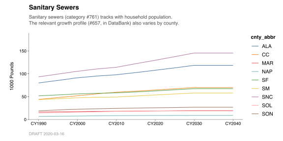

4 Throughputs
This chapter is very similar to the previous chapter (“Emissions”). If you haven’t read that one yet, it would probably be a good idea to read it first!
The first section in this chapter, Obtaining throughput data (below), is a bit of a digression. If you like, you can just skip ahead to Charting annual throughputs.
4.1 Obtaining throughput data
In the Emissions chapter, we had a nice “published” dataset ready at hand: BY2011_annual_emission_data.
Unfortunately, there are no analogously “published” area-source throughputs for BY2011. However, we can fairly easily (re-)produce CY1990-2040 area-source estimates from the information contained in the BY2011 DataBank t-tables. Then, we can extract throughputs from those. That’s what we’ll do in the subsections below. Again, this is a bit of a digression — you can just skip ahead to Charting annual throughputs and come back to this later, if you like.
4.1.1 Recreating BY2011 area-source projections
In the chunk of code below, we recreate the entire BY2011 area-source inventory, from CY1990 through CY2040. (It’s actually pretty fast.)
#
# Step 1: `BY_area_source_projections()` recreates an entire inventory. For
# each category, it assembles `tput_qty`, `ef_qty`, and `cf_qty`, and then
# calculates `ems_qty` from those.
#
# It can also do much more --- see `help("BY_area_source_projections")` to learn
# how you can "swap in" alternative throughputs, emission factors, etc.
#
# **NOTE:** For BY2011, in some cases, the calculated emission estimates may
# differ from the published emission estimates. See the Appendix for an
# explanation and a specific example.
#
BY2011_area_source_projection_data <-
BY(2011) %>%
BY_area_source_projections(
verbose = TRUE)
head(BY2011_area_source_projection_data)| year | cat_id | cnty_abbr | tput_qty | tput_unit | pol_id | pol_abbr | ef_qty | ef_unit | cf_qty | ems_qty | ems_unit |
|---|---|---|---|---|---|---|---|---|---|---|---|
| CY1990 | 1576 | CC | 1727880 | 1000 CUBIC FT | 990 | TOG | 0.134 | lb/tput | 0.28 | 32.41502 | tons/yr |
| CY1990 | 1576 | CC | 1727880 | 1000 CUBIC FT | 6970 | CH4 | 0.030 | lb/tput | 1.00 | 25.91819 | tons/yr |
| CY1991 | 1576 | CC | 3277889 | 1000 CUBIC FT | 990 | TOG | 0.134 | lb/tput | 0.28 | 61.49320 | tons/yr |
| CY1991 | 1576 | CC | 3277889 | 1000 CUBIC FT | 6970 | CH4 | 0.030 | lb/tput | 1.00 | 49.16833 | tons/yr |
| CY1992 | 1576 | CC | 3138134 | 1000 CUBIC FT | 990 | TOG | 0.134 | lb/tput | 0.28 | 58.87140 | tons/yr |
| CY1992 | 1576 | CC | 3138134 | 1000 CUBIC FT | 6970 | CH4 | 0.030 | lb/tput | 1.00 | 47.07201 | tons/yr |
The resulting BY2011_area_source_projection_data now contains columns for:
ems_qtyandems_unit(emissions);ef_qty(emission factors);cf_qty(uncontrolled fractions); andtput_qtyandtput_unit(throughputs).
4.1.2 De-duplicating recreated BY2011 throughputs
Next, we derive BY2011_area_source_throughput_data from BY2011_area_source_projection_data.
The fact that BY2011_area_source_projection_data contains tput_qty and tput_unit makes it almost suitable for use with chart_annual_throughputs_by(). But, BY2011_area_source_projection_data is in long (“tidy”) format, suitable for use with chart_annual_emissions_by(). This means that the values in the tput_qty column are repeated once per pollutant. If we just added them up, we’d end up with a big over-estimate.
We’ll use distinct() to solve the problem.
#
# We can use `distinct()` to de-duplicate throughputs.
#
BY2011_area_source_throughput_data <-
BY2011_area_source_projection_data %>%
distinct(
year,
cat_id,
cnty_abbr,
tput_qty,
tput_unit)Now we have a clean BY2011_area_source_throughput_data.
Again, if you’re reading in throughput data from a .CSV or .XLSX file, you won’t have to worry at all about the steps above. Just skip ahead to the next section!
4.2 Charting annual throughputs
Let’s examine a category where the growth in throughput varies by county over time. A good example is #761 “Sanitary Sewers”.
#
# Even though the relevant throughputs appear twice in these data --- once for
# `ROG` rows, and once for `CH4` --- `chart_annual_throughputs_by()` tries not
# to double-count. See `help("chart_annual_throughputs_by")` for details.
#
BY2011_area_source_projection_data %>%
filter_categories(
"Sanitary Sewers" = 761) %>%
chart_annual_throughputs_by(
color = cnty_abbr,
title = "Sanitary Sewers",
subtitle = str_c(
"Sanitary sewers (category #761) tracks with household population.",
"The relevant growth profile (#657, in DataBank) also varies by county.",
sep = "\n"))
As you can see, the syntax for chart_annual_throughputs_by() is identical to that for chart_annual_emissions_by(). If you used chart_annual_emissions() and didn’t supply color = cnty_abbr, you would see the regional totals instead.
Above, we’ve also colored by cnty_abbr, rather than cat_id. This often makes sense when working with throughput data, since different categories often are estimated in terms of different throughput units. So, displaying throughputs for different categories on the same scale may not always make sense (although when the units are the same, it does).
What if we wanted to understand these throughputs in terms of percent change (%), rather than absolute units (“1000 Pounds”)? Let’s move on to the next two chapters, Relative Changes and Growth Profiles.